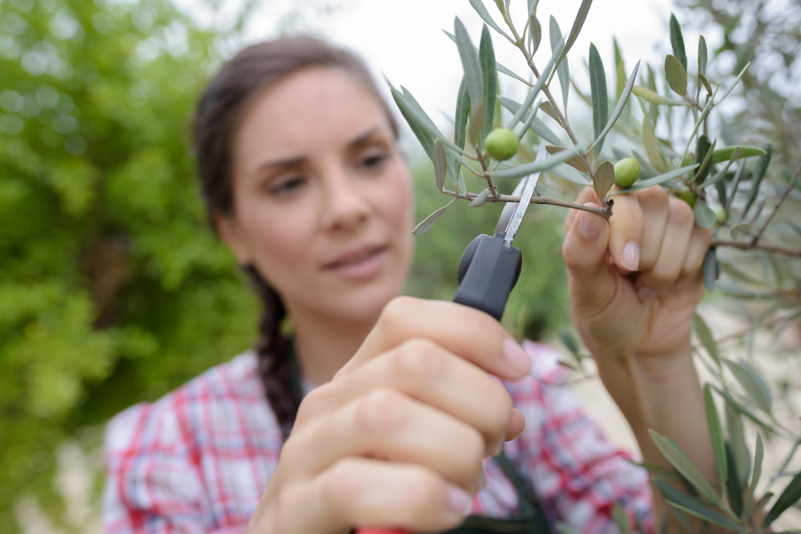

LA TAILLE DE
L’OLIVIER
Les anciens aimaient les grands arbres car ils pensaient que plus l’arbre était important, plus grande serait la quantité de fruits menée au moulin. Ils laissaient donc l’olivier grandir dans toutes les directions. Ils avaient quand même remarqués que la fructification se faisait principalement sur les parties retombantes des rameaux (penduliers).
La taille de l’olivier est une opération importante, voire essentielle dans la culture de l’olivier. La taille a pour but de former, de favoriser la fructification ou de permettre la reprise d’un olivier laissé à l’abandon.
Quand tailler un olivier
La Taille est traditionnellement effectuée en fin d’hiver (fin février, début mars et en avril) et ce tous les ans afin de respecter le cycle végétatif qui se fait sur deux ans. Il vous reste ensuite à lui donner la forme qui vous conviendra le mieux. Mais on dit toujours… ce qui plait à l’oeil, plait à la nature Une fois la taille effectuée vous aurez besoin d’un broyeur de végétaux pour réduire au maximum les déchets et réutiliser sous forme de compost les branches taillées
L’olivier de production
Comme tous les arbres fruitiers, l’olivier est régulièrement taillé.
Il peut être taillé toute l’année, mais les mois de mars, avril et mai
sont les mois de la taille, entre les risques de gel et la floraison.
L’olivier est un arbre qui nécessite une taille annuelle. Il
faut discerner les tailles favorisant la production de fruits et la
taille purement esthétique.
La taille de formation sur le jeune arbre, a pour but de former un monotronc en éliminant les branches afin de renforcer la ligne centrale. Quand le jeune olivier atteint 1.50m, il convient de lui donner une forme équilibrée et rationnelle pour son exploitation...
L’olivier d’ornement
La taille de l’olivier d’ornement est un acte subjectif à la base car l’olivier est principalement destiné à la production d’olives. La taille d’un olivier destiné à l’ornement se rapproche de la taille de formation de l’olivier de production. Le but de la taille est d’obtenir une charpente équilibrée formant au choix une sorte de gobelet destiné à aérer la frondaison, une boule à l’aspect décoratif ou tous autres styles donnants à l’arbre sa propre place dans votre espace vitale.